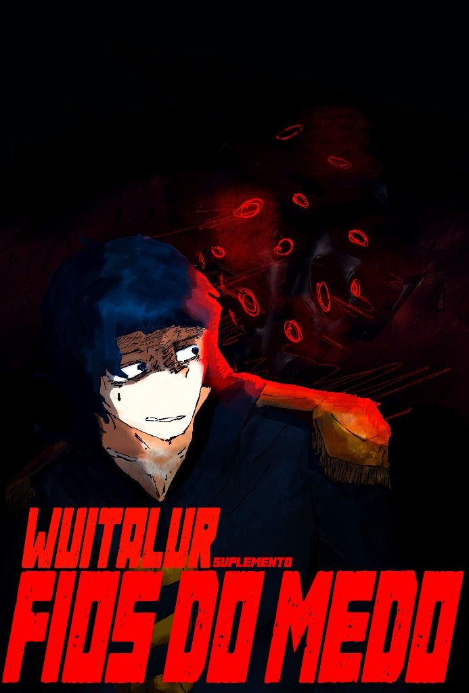

Fios do Medo
Suplemento oficial de terror e mistério, trazendo oportunidades para narrativas focadas totalmente em investigação, conspirações e sobrevivência diante do desconhecido.
Voltar ao Catálogo de SuplementosAtributos
Saúde, Vigor, Força e Mente — Dados de d4 a d16 e a regra de Situações Impossíveis.
Arquétipos
20 Arquétipos que substituem as origens, trazendo 1 habilidade e 1 bônus exclusivo cada.
Raças
Lista de raças adaptadas para Fios do Medo.
Criação de Personagem
Passo a passo para montar sua ficha no suplemento Fios do Medo.
Perícias
Sistema de degraus de dados (d4 → d8 → d12 → d16) e rolagem de d16 + d4 no degrau máximo.
Sanidade e Estresse
Barra de estresse, gatilhos de horror, acúmulo de pontos de estresse e colapso mental.
Condições
Estados e aflições físicas e mentais que impactam os sobreviventes.
Mecânicas
Turnos, combate desarmado, mecânica de ajuda, reações e regras essenciais.
Investigação
Pontos de Interesse (PdI), exploração de ambientes, pistas ocultas e resolução de mistérios.
Perseguição
Vantagem de Distância (VD), fuga desesperada, barricadas, esconderijos e fôlego contra o Perseguidor.
Glossário
Explicações de siglas, termos técnicos e regras do suplemento.